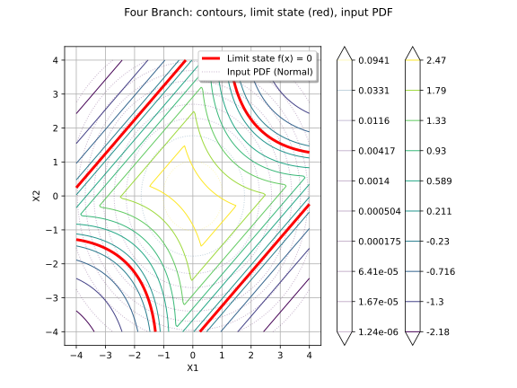
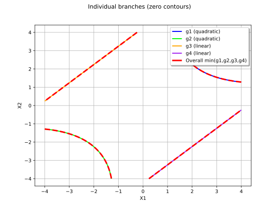

Note
Go to the end to download the full example code.
Four Branch function visualization and reliability analysis¶
This example demonstrates the Four Branch function (Schueremans & van Gemert, 2005), visualizes its limit state, and performs basic reliability analysis.
import openturns as ot
import openturns.viewer as otv
from openturns.usecases import four_branch_function
import math
Load the standard benchmark model (p=6, standard normal inputs)
fb = four_branch_function.FourBranchModel()
print("Standard model:")
print(f" p = {fb.p}")
print(f" Distribution: {fb.distribution}")
print(f" Model: {fb.model}")
Standard model:
p = 6.0
Distribution: JointDistribution(Normal(mu = 0, sigma = 1), Normal(mu = 0, sigma = 1), IndependentCopula(dimension = 2))
Model: class=PythonEvaluation name=OpenTURNSPythonFunction
Visualize the function surface
graph = fb.model.draw([-4.0, -4.0], [4.0, 4.0], [80, 80])
graph.setTitle("Four Branch function (Schueremans & van Gemert, 2005)")
graph.setXTitle("X1")
graph.setYTitle("X2")
graph.setLegendPosition("upper right")
view = otv.View(graph, figure_kw={"figsize": (8, 6)})

Contour plot with limit state and input PDF
graph = fb.model.draw([-4.0, -4.0], [4.0, 4.0], [128, 128])
dr = graph.getDrawable(0)
dr.setLevels([-2.0, -1.0, -0.5, 0.0, 0.5, 1.0, 2.0, 3.0])
dr.setLegend("f(x)")
dr.setLineWidth(1.5)
# Highlight limit state
ls_graph = fb.model.draw([-4.0, -4.0], [4.0, 4.0], [200, 200])
ls_dr = ls_graph.getDrawable(0)
ls_dr.setLevels([0.0])
ls_dr.setLegend("Limit state f(x) = 0")
ls_dr.setLineWidth(3)
ls_dr.setColor("red")
# Input PDF
pdf_graph = fb.distribution.drawPDF([-4.0, -4.0], [4.0, 4.0], [80, 80])
pdf_dr = pdf_graph.getDrawable(0)
pdf_dr.setAlpha(0.3)
pdf_dr.setLegend("Input PDF (Normal)")
pdf_dr.setLegend("Input PDF (Normal)")
pdf_dr.setLineStyle("dotted")
graph.add(ls_dr)
graph.add(pdf_dr)
graph.setTitle("Four Branch: contours, limit state (red), input PDF")
graph.setXTitle("X1")
graph.setYTitle("X2")
graph.setLegendPosition("upper right")
view = otv.View(graph, figure_kw={"figsize": (8, 6)})

Individual branches visualization
p = fb.p
sqrt2 = math.sqrt(2.0)
g1 = ot.SymbolicFunction(["x1", "x2"], [f"3 + 0.1*(x1 - x2)^2 - (x1 + x2)/{sqrt2:.6f}"])
g2 = ot.SymbolicFunction(["x1", "x2"], [f"3 + 0.1*(x1 - x2)^2 + (x1 + x2)/{sqrt2:.6f}"])
g3 = ot.SymbolicFunction(["x1", "x2"], [f"(x1 - x2) + {p}/{sqrt2:.6f}"])
g4 = ot.SymbolicFunction(["x1", "x2"], [f"(x2 - x1) + {p}/{sqrt2:.6f}"])
graph = ot.Graph("Individual branches (zero contours)", "X1", "X2")
graph.setAxes(True)
graph.setGrid(True)
branches = [
(g1, "g1 (quadratic)", "blue"),
(g2, "g2 (quadratic)", "green"),
(g3, "g3 (linear)", "orange"),
(g4, "g4 (linear)", "purple"),
]
for func, name, color in branches:
dr = func.draw([-4.0, -4.0], [4.0, 4.0], [100, 100]).getDrawable(0)
dr.setLevels([0.0])
dr.setLegend(name)
dr.setColor(color)
dr.setLineWidth(2)
graph.add(dr)
# Overall limit state
dr_all = fb.model.draw([-4.0, -4.0], [4.0, 4.0], [200, 200]).getDrawable(0)
dr_all.setLevels([0.0])
dr_all.setLegend("Overall min(g1,g2,g3,g4)")
dr_all.setColor("red")
dr_all.setLineWidth(3)
dr_all.setLineStyle("dashed")
graph.add(dr_all)
graph.setLegendPosition("upper right")
view = otv.View(graph, figure_kw={"figsize": (8, 6)})

Failure domain visualization via Monte Carlo sampling
sample = fb.distribution.getSample(50000)
values = fb.model(sample)
failure_indices = [i for i, v in enumerate(values) if v[0] <= 0]
safe_indices = [i for i, v in enumerate(values) if v[0] > 0]
failure_sample = sample[failure_indices]
safe_sample = sample[safe_indices]
pf_mc = len(failure_indices) / 50000
print(f"\nMonte Carlo estimate (N=50000): P_f = {pf_mc:.6f}")
graph = ot.Graph(f"Failure domain (Monte Carlo, P_f ≈ {pf_mc:.4f})", "X1", "X2")
graph.setAxes(True)
graph.setGrid(True)
if failure_sample.getSize() > 0:
cloud_fail = ot.Cloud(failure_sample)
cloud_fail.setColor("red")
cloud_fail.setPointStyle("bullet")
cloud_fail.setLegend(f"Failure ({failure_sample.getSize()} pts)")
graph.add(cloud_fail)
cloud_safe = ot.Cloud(safe_sample)
cloud_safe.setColor("blue")
cloud_safe.setPointStyle("dot")
cloud_safe.setLegend(f"Safe ({safe_sample.getSize()} pts)")
graph.add(cloud_safe)
# Limit state
dr_all = fb.model.draw([-4.0, -4.0], [4.0, 4.0], [200, 200]).getDrawable(0)
dr_all.setLevels([0.0])
dr_all.setLineWidth(2)
dr_all.setColor("black")
dr_all.setLineStyle("dashed")
dr_all.setLegend("Limit state")
graph.add(dr_all)
graph.setLegendPosition("upper right")
view = otv.View(graph, figure_kw={"figsize": (8, 6)})

Monte Carlo estimate (N=50000): P_f = 0.004460
Reliability analysis: Monte Carlo with larger sample
print("\n--- Reliability Analysis ---")
# Monte Carlo
ot.RandomGenerator.SetSeed(0)
event = ot.ThresholdEvent(ot.CompositeRandomVector(fb.model, ot.RandomVector(fb.distribution)),
ot.Less(), 0.0)
mc_algo = ot.ProbabilitySimulationAlgorithm(event, ot.MonteCarloExperiment())
mc_algo.setMaximumCoefficientOfVariation(0.05)
mc_algo.setMaximumOuterSampling(int(1e6))
mc_algo.run()
mc_result = mc_algo.getResult()
print(" Monte Carlo (COV=5%):")
print(f" P_f = {mc_result.getProbabilityEstimate():.6e}")
print(f" COV = {mc_result.getCoefficientOfVariation():.4f}")
print(f" N_calls = {mc_result.getOuterSampling()}")
otv.View.ShowAll()
--- Reliability Analysis ---
Monte Carlo (COV=5%):
P_f = 4.354184e-03
COV = 0.0500
N_calls = 91636